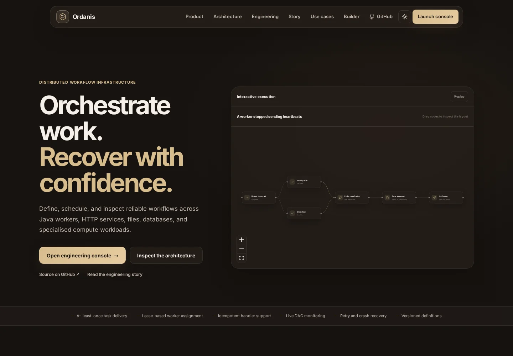

01
Engineering project · Demo
Ordanis
A distributed workflow engine for coordinating multi-step jobs across Java workers. I built the execution engine, backend and React operations console.
Dependency graphs, durable PostgreSQL state, task leases and worker-loss recovery. Authentication and scheduling remain planned features.
Java 21
Spring Boot
gRPC
PostgreSQL
React
Docker
Open live web demo ↗
View source code ↗
